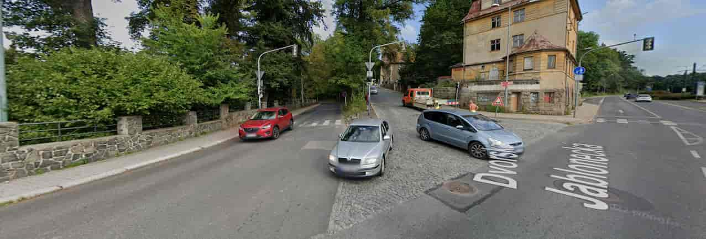

Na přechodu pro chodce za Chicago barem zastavil nákladní automobil s dvojitým přívěsem, takže jsi ho musel přeskočit v kloubu.
Pak dál pokračuješ po bídě, ale dojde ti že budeš muset jít po silnici, "holt tak po ní půjdu" řekneš si. Cestou se ti naštěstí nic nestalo, ale jsi zase na křižovatce,
bohudík už tam je chodník. Kudy se vydáš?


Nahoru kolem Thermicy
Podél plotu
Po kostkách nahoru